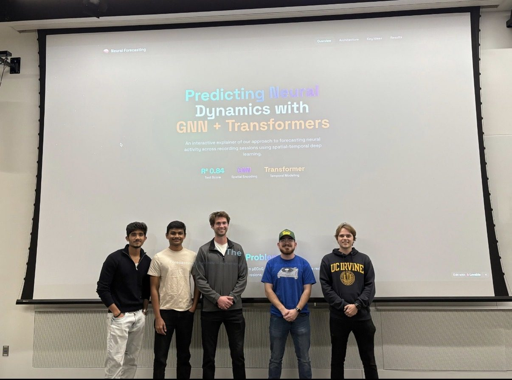
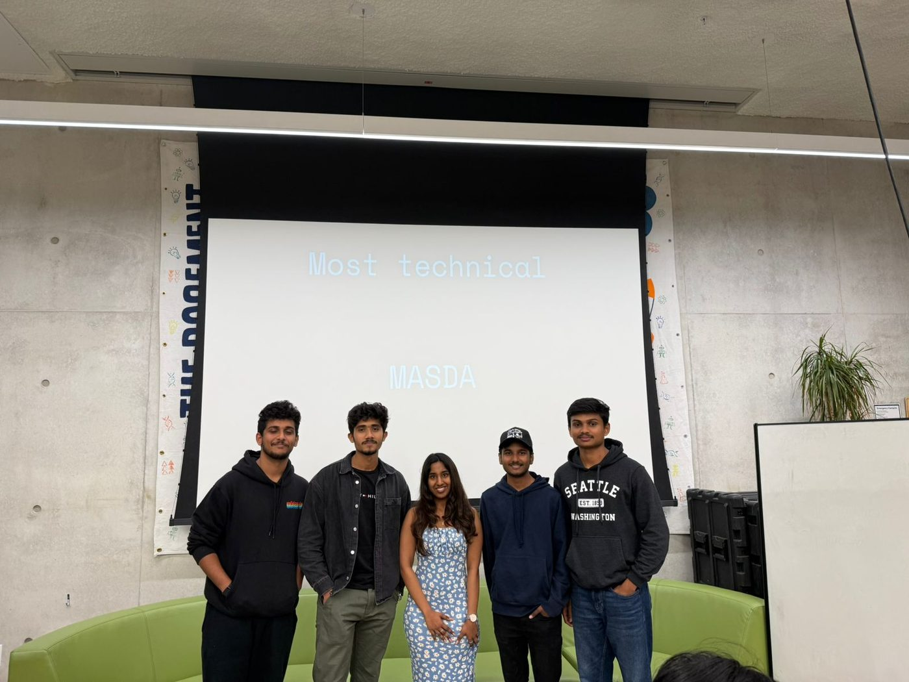
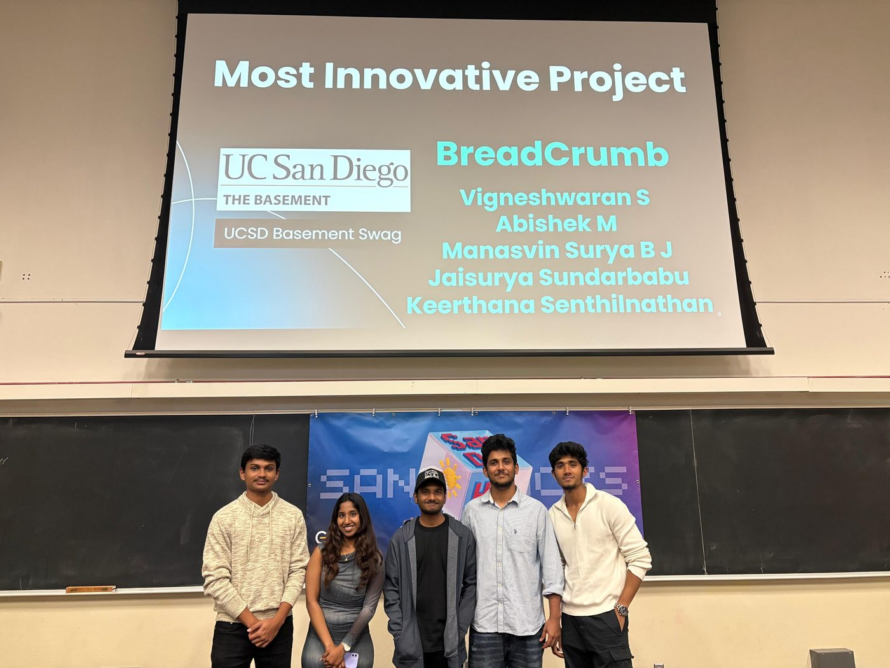
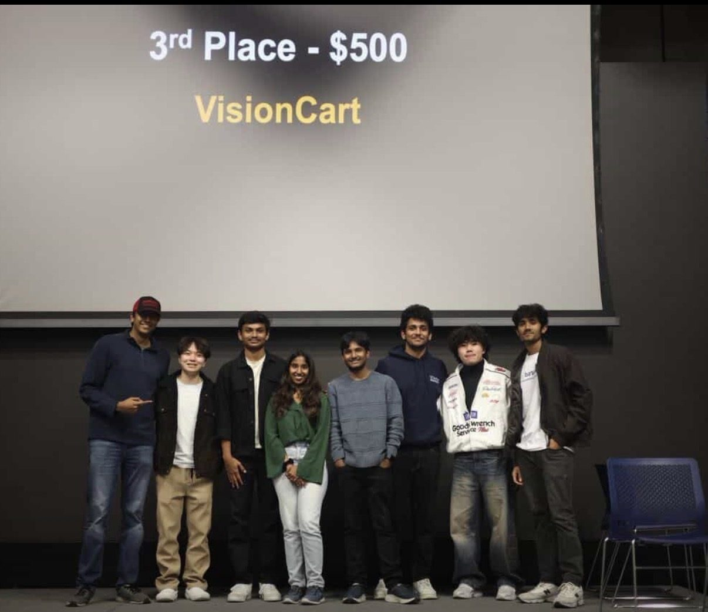

import numpy as np
class DataScientist:
def __init__(self):
self.name = "Jaisurya"
Hi, my name is
Jaisurya
Sundarbabu.
MS in Data Science @ UC San Diego | ML Engineer Intern @ Qualcomm | LLM Inference & Efficient AI | FastVideo Contributor
I build fast, efficient ML systems. Most recently at Qualcomm I worked on sparse attention, KV-cache eviction and activation-aware quantization for LLM inference. Before that I partnered with clients at Celebal to build an end-to-end RAG system (95% accuracy on unseen issues) and shipped backend services at Samsung.
Featured Projects
DIP-KV: Adaptive KV-Cache Admission for LLM Serving
Adaptive KV-cache admission policy for vLLM’s CPU offload tier (probation insertion, ghost list, sampled shadow caches), built on vLLM’s plugin API. On Kimi production traces (A100), it cut TTFT vs. vLLM’s LRU by 40% / 25% (p50/p95) on agentic traffic and 15% / 13% on chat. Also showed that LRU, LFU and cost-aware eviction perform identically at GPU-memory capacity because 85% of KV chunks are never reused, and built a trace-driven simulator that predicts GPU hit rates within 0.7 pp.
Edge AI Optimization: Quantization & Pruning
Applied 8-bit post-training quantization and structured pruning (70% sparsity) to a deep learning model in PyTorch, retaining 90% accuracy with 40% lower latency and a 1.6x throughput gain.
Current Research
Efficient Long-Context Inference
My current focus is making long-context LLM inference cheaper without giving up quality. The questions I’m working on:
- Which KVs to keep: admission and eviction policies that shrink the cache while holding perplexity.
- Where attention can be sparse: selecting the most important KVs to speed up prefill.
- How outliers break low-bit math: activation-aware quantization that keeps quantization noise down.
Professional Experience
Machine Learning Engineer Intern
@ Qualcomm
- Designed a sparse attention method to accelerate the prefill stage by selecting the most important KVs, cutting the KV budget from 8,192 to 1,024 tokens with under 5% perplexity degradation.
- Built a KV-cache eviction policy that let a 2,048-context model outperform an 8,192-context Hugging Face baseline, improving perplexity by 5% despite the expected quality tradeoff from eviction.
- Researched activation-aware quantization, excluding outlier-token activations from the quantization range to improve SQNR by about 6 dB (about 4x lower quantization noise) while keeping perplexity degradation under 5%.
Graduate Student Researcher
@ FastVideo / Hao AI Lab, UC San Diego
- Open-source contributor to FastVideo (3K+ GitHub stars), integrating Kandinsky-5.0 Video Lite by adding DiT configs and wiring model registration/loading for Diffusers-style checkpoints.
- Built numerical parity and regression tests to validate weight mapping and match transformer outputs vs. the reference implementation, unblocking a draft PR toward T2V Lite pipeline support.
Associate Data Scientist
@ Celebal Technologies
- Partnered with client stakeholders to scope requirements and build an end-to-end LLM-based RAG system with semantic search for manufacturing issue resolution; achieved 95% accuracy on unseen issues, cutting new tickets by 70%.
- Developed predictive models for retail demand forecasting on large historical datasets using time-series feature engineering and statistics-driven backtesting; delivered 15% MAPE and supported planning decisions.
- Automated retail cataloging via a Databricks pipeline over Delta tables (photoshoot images), using a computer vision classifier and prompt-based attribute extraction to generate e-commerce-ready data.
Software Development Engineer
@ Samsung Digital Commerce
- Owned backend services for the Samsung Shop app, designing and integrating 6 production APIs and automating recurring jobs to keep data fresh, improving system availability and reliability at scale.
- Designed, developed, and tested backend changes for the global Samsung S24 launch, implementing logging and validation checks and access controls aligned to internal compliance and production standards.
Data Science Intern
@ Actyv.ai
- Delivered an end-to-end document classification pipeline using deep learning + NLP; reduced manual onboarding data entry by 80% through robust preprocessing and quality checks.
- Created and evaluated an ensemble of DL/NLP models achieving 90% accuracy; routed outputs to Amazon S3 with monitoring hooks and data handling aligned with onboarding compliance requirements.
Machine Learning Intern
@ KGiSL
- Designed an NLP-based resume filtering tool that automated 80% of initial screening; iterated on preprocessing and keyword/ranking logic to improve precision and reduce manual review time.
- Built churn predictive models using Logistic Regression and XGBoost; achieved 93% accuracy and presented data analytics insights with clear data visualization summaries for retention actions.
Education
University of California, San Diego
M.S. in Data Science
Sri Venkateswara College of Engineering
B.Tech in Information Technology
Technical Skills
terminal Languages
bolt LLM Inference & Serving
psychology Machine Learning / AI
dns Systems & MLOps
Awards & Media

emoji_eventsWinnerNSF HDR Hackathon · Neural Forecasting
Predicting Neural Dynamics with GNN + Transformers
Forecast neural activity across recording sessions with spatial-temporal deep learning: a GNN for spatial encoding and a Transformer for temporal modeling, reaching R² 0.84 on the test set.

memoryMost TechnicalSDX Hackathon
MASDA
Awarded Most Technical project.

lightbulbMost Innovative ProjectSanD Hacks · UC San Diego
BreadCrumb
Won Most Innovative Project, a prize sponsored by The Basement, UC San Diego’s student entrepreneurship hub.

military_tech3rd Place · $500c0mpiled-5 · UC San Diego
VisionCart
Placed 3rd overall.